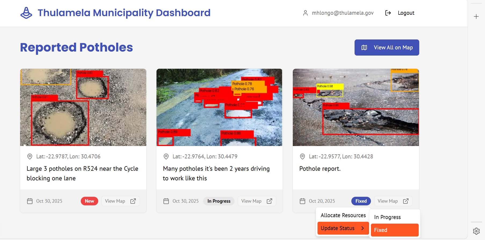
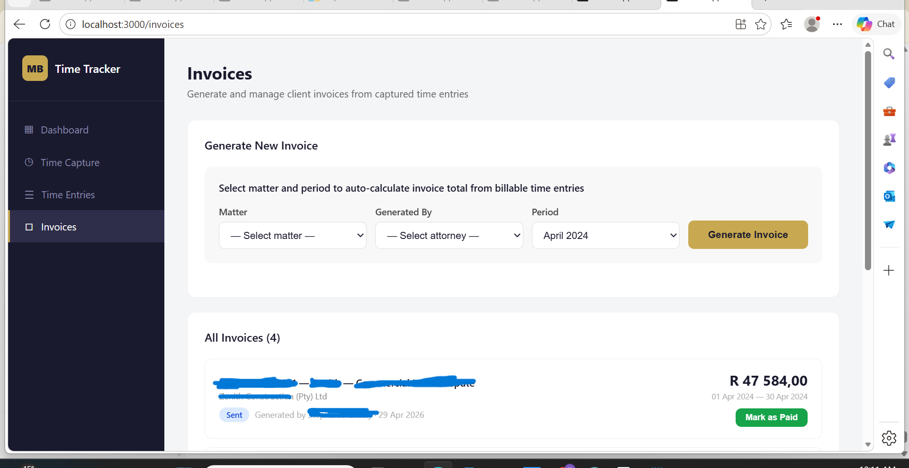
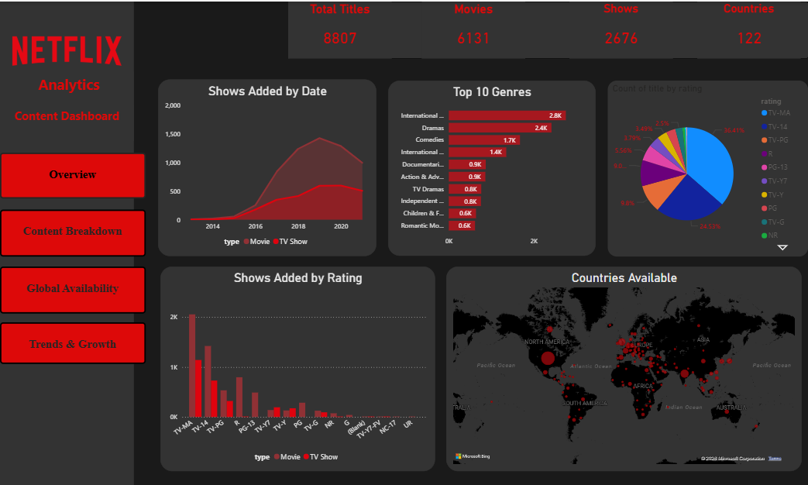
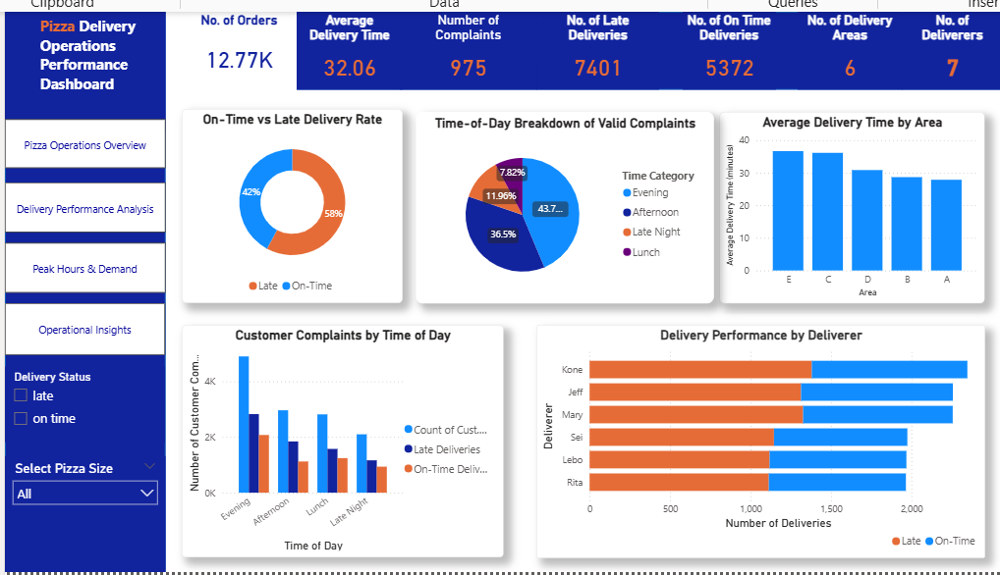
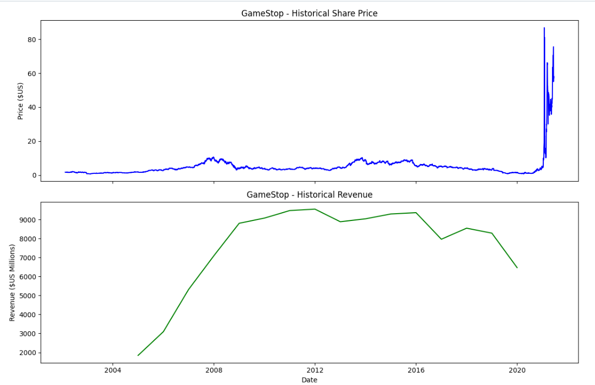

I am a Computer Science Honours graduate from the University of Venda, passionate about AI, software engineering, and building data-driven solutions that solve real problems. I enjoy exploring new technologies, turning complex ideas into working solutions, and continuously growing as an engineer. I am a curious, resilient, and driven person who believes technology should do more than work — it should matter.
About Me
I'm a Computer Science Honours graduate from the University of Venda, passionate about AI, software engineering, and building data-driven solutions that solve real problems.
I like solving problems that sit at the intersection of software engineering and data — whether that's building a mobile application from the ground up, designing a cloud architecture under real constraints, or extracting insight from a messy dataset. I am currently a 3-month AI & Data Solutions Intern — Strategic Planning & Innovation on Roche's IP2TIS Global Internship Programme, within the Africa Strategy & Innovation team — as the only intern in South Africa building an end-to-end offline-first mobile solution for field data digitization, including computer vision integration to extract structured data from physical assets, and the data pipeline feeding live geospatial dashboards used for real business decisions. Beyond my core project, I welcome the opportunity to contribute to a short data analytics task for the finance team, an experience that reinforces how curiosity and adaptability can open the door to meaningful work beyond one's immediate role.
I'm comfortable moving between disciplines from data pipelines and BI dashboards, to mobile and cloud-native development, to applied AI/ML and edge deployment and I enjoy picking up whatever stack a problem actually needs, rather than staying in one lane. I'm actively seeking full-time opportunities in software engineering, data engineering/analytics, cloud computing, or AI/ML, while continuing to grow through independent projects and applied research.
Distinctions in Honours Research Project, Wireless & Ad Hoc Networking, Compiler Principles, and Guided Reading, with research focused on Intelligent Transport Systems.
Completed exchange studies covering R Programming, SQL, Cloud Computing, Information Security, and Cybersecurity Ethics.
Final-year average of 79% with distinctions in Software Engineering, Systems Analysis, Advanced Algorithms, and Database Design, while maintaining 65%+ across all years.
Research distinction, Botho exchange selection, and 100+ students supported through tutoring and lab assistance.
Featured Work
Selected work across enterprise, research, and full-stack engineering.
Contributing to a high-impact AI-enabled strategy project mapping the In Vitro Diagnostics (IVD) landscape across Africa — transforming fragmented, manual field records into a standardized, AI-validated single source of truth. Prototyping an offline-first mobile application, integrating computer vision to extract metadata from physical instrument tags, and building the data pipeline feeding live geospatial dashboards used for real commercial decisions.
Something I've been exploring on my own: how machine learning can be applied to network intrusion detection on resource-constrained IoT devices, with a particular interest in approaches that preserve data privacy without relying on centralized cloud processing. I've been working through publicly available network traffic benchmark datasets used in this space to build a stronger practical understanding of the field.

Developed a mobile system that detects potholes using YOLOv8 and TensorFlow Lite. Automated reporting reduced manual effort by 35–40% while achieving ~90% detection accuracy.

A full-stack prototype automating attorney time capture and legal billing — built for a Software Engineer Internship assessment. Attorneys log time against client matters, the system applies automatic 6-minute billing-unit rounding, generates invoices, and surfaces productivity through a live dashboard.
Exploring insights, dashboards, and real-world datasets.

Built an end-to-end analytics pipeline using SQL, Excel, and Power BI to analyse content trends, genres, ratings, and global distribution.

Developed a Power BI dashboard to analyse delivery performance, complaints, demand trends, and operational KPIs.

Extracted, cleaned, and visualised Tesla and GameStop stock data using Python, combining APIs and web scraping to analyse market trends.
Skills
A mix of programming, analytics, cloud, and deployment tools.
Certifications
Courses completed with verifiable certificates — click any card to verify.
Contact
I am open to internships, graduate opportunities, collaborations, and networking conversations.